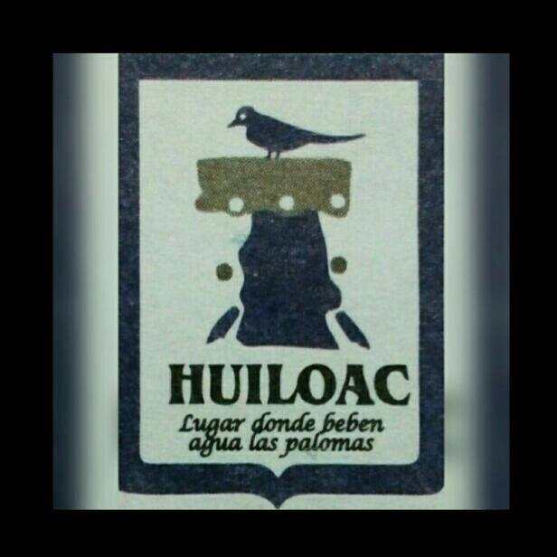
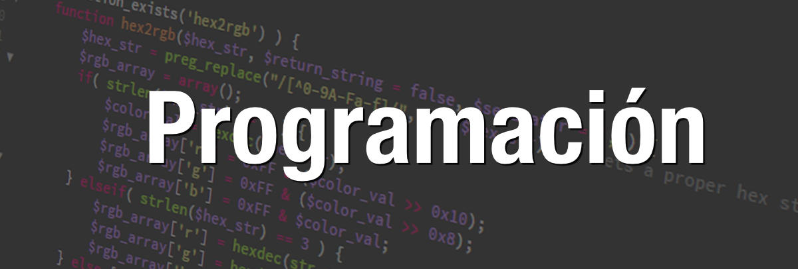

Bienvenido al Bachillerato Tecnologico Huiloac

| En el
centro de este contexto se ubica "sin lugar a dudas" la educación de niños y jóvenes cuyo futuro escolar, laboral y
existencial se ve amenazado por diferentes factores como: la extrema pobreza que sufre más de la mitad de población del
país; la escasa inversión gubernamental en la educación pública; la ineficiencia y burocratismo que imperan en las instancias
educativas federal y estatal; la corrupción enseñoreada en el sindicato magistral; el papel enajenante de los medios electrónicos
de comunicación y una sociedad comunista y desinformada que se ocupa más en resolver los problemas en la diaria subsistencia,
relegando la educación al final de sus prioridades. |
NUESTRA VISIÓN:
"HACER LO QUE OTROS DICEN QUE NO SE PUEDE."
NUESTRA MISIÓN:
"PROPORCIONAR DIARIAMENTE EDUCACIÓN DE CALIDAD PARA FORMAR CIUDADANOS RESPONSABLES CON SU TIEMPO Y CON LAS
NECESIDADES DEL PUEBLO MEXICANO."
| Ofrece formación integral a los jóvenes para incorporarse a la vida productiva con un título de Técnico y/o
acceder a estudios superiores, al tiempo de promover e inculcar su participación en la toma de decisiones para
la solución de problemas del entorno del estudiante |
El bachillerato ofrece tres carreras tecnicas

Inicio -
Administración -
Programación -
Mantenimiento -
Copyright 2022 CBTIS Huiloac
 Elaborado por: Andrea Cadena Vázquez 5B
Elaborado por: Andrea Cadena Vázquez 5B
|